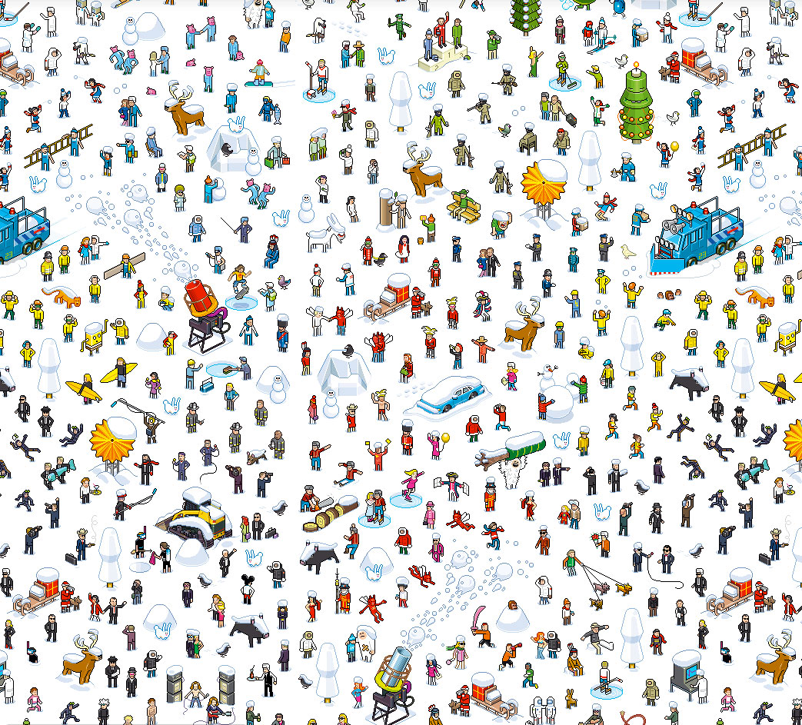

<ion-view title="Perfil">
  <!-- ======================
  LEFT SIDE BUTTON
  ====================== -->
  <ion-nav-buttons side="left">
 
  </ion-nav-buttons>

  <!-- ======================
  RIGHT SIDE BUTTON
  ====================== -->
  <ion-nav-buttons side="right">
    <button class="button button-icon icon ion-edit"></button>
  </ion-nav-buttons>
  
  <ion-content class="has-header gem-ion-content">
    <!-- ======================
    GEMIONIC PROFILE SECTION
    ====================== -->
    <div class="gem-profile-media">
      <div class="gem-profile-details profile2a">
      <div class="partesuperior">
       
        <h3 class="gem-white marginpading">{{usuario.username}}</h3>
</div>
<div class="list">
        <label class="item item-input">
    <input type="text" placeholder="Nombre" ng-model="usuario.name">
  </label>
       
   <label class="item item-input">
    <input type="text"  placeholder="E-Mail" ng-model="usuario.email">
  </label>
     <label class="item item-input">
    <input type="text"  placeholder="Ciudad" ng-model="usuario.city">
  </label>
  <label class="item item-input">
      
          <input type="text" placeholder="Pais" ng-model="usuario.country">
        </label>
  
  <label class="item item-input biografia">
    <textarea class="biografia" placeholder="Biografía" ng-model="usuario.biografia"></textarea>
  </label></div>
<button ng-click="doSave()" class="button button-balanced">
        Guardar
      </button>
      
  </div>
       
      <!-- Background Image -->
      

    </div>


    <!-- Profile Stats - ionic '.row' extended with profile-3. .gem-center centralizes -->
    <!-- Profile Feed -->
   


        <!-- Gemionic Gallery (extends .row with .row-wrap for easy ng-repeat) -->

        <!-- End Gemionic Gallery -->

        <!-- Title box -->

        <!-- End Title box -->

        <!-- Friend List (Grid) Refer to templates/social/friend-grid.html -->
        
        <!-- End Friend list (Grid) -->

     
  </ion-content>
</ion-view>
